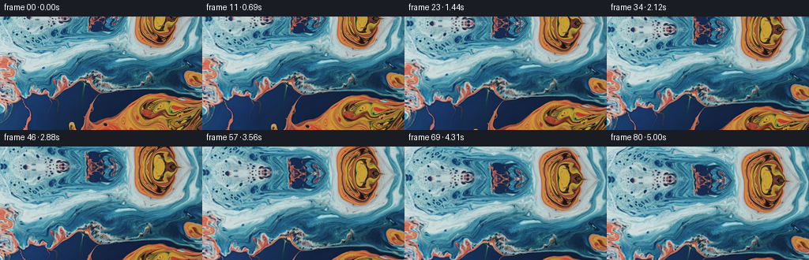
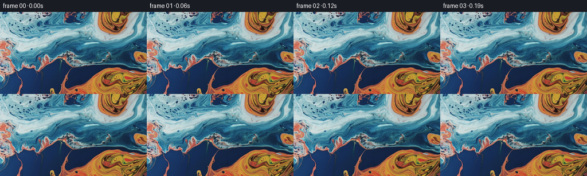

← 本轮 smoke 总览traex/GPT-5.6-Sol · 0003_s3
vision-agent · 256×144 · 16.0 FPS · 81 帧 · 状态 complete · 输出 tokens 4861
原始任务a close up of a blue and orange liquid, camera tilts up
当前保存结果
已保存候选与代码修改
这里按时间展示外部捕获的候选，每份均可单独播放。保存新版本不等于完成视觉检查；下方工具证据记录实际看过的图。
候选 01 · 2026-11-09T02:19:56.326679+00:00 · 点开播放与检查图
inspection.png

transition_check.png

代码变化
--- 上一保存版本
+++ 本次保存版本
@@ -0,0 +1,101 @@
+"""Generate a slow upward camera tilt over the supplied marbled-liquid image.
+
+The shot is made entirely from first_frame.png. A reflected, softly warped
+continuation supplies pixels just outside the photographed frame; the modest
+travel keeps that continuation visually consistent with the abstract liquid.
+"""
+
+from pathlib import Path
+
+import cv2
+import numpy as np
+from PIL import Image
+
+import artifact_io
+
+
+CASE_DIR = Path(__file__).resolve().parent
+W, H = 256, 144
+N = 81
+
+
+def smooth_noise(rng: np.random.Generator, out_h: int, out_w: int) -> np.ndarray:
+ """Create a very low frequency, zero-mean displacement texture."""
+ small = rng.normal(0.0, 1.0, (7, 11)).astype(np.float32)
+ field = cv2.resize(small, (out_w, out_h), interpolation=cv2.INTER_CUBIC)
+ field = cv2.GaussianBlur(field, (0, 0), 11.0)
+ field -= field.mean()
+ field /= max(float(field.std()), 1e-6)
+ return field
+
+
+def generate() -> np.ndarray:
+ source = np.asarray(Image.open(CASE_DIR / "first_frame.png").convert("RGB"))
+ if source.shape != (H, W, 3):
+ raise ValueError(f"Unexpected first-frame shape: {source.shape}")
+
+ # Work in a padded coordinate system. Reflection is especially well suited
+ # to fluid marbling: contours continue at the edge rather than ending in a
+ # flat-colored strip. Extra blur-free padding also permits subpixel warps.
+ pad_x, pad_y = 42, 72
+ padded = cv2.copyMakeBorder(
+ source, pad_y, pad_y, pad_x, pad_x, borderType=cv2.BORDER_REFLECT_101
+ )
+
+ yy, xx = np.mgrid[0:H, 0:W].astype(np.float32)
+ rng = np.random.default_rng(31109)
+ flow_x = smooth_noise(rng, H, W)
+ flow_y = smooth_noise(rng, H, W)
+
+ # Long, quiet waves complement the natural streaks without making the
+ # picture appear to wobble like a sheet of paper.
+ wave_x = np.sin(yy / 27.0 + xx / 91.0).astype(np.float32)
+ wave_y = np.sin(xx / 54.0 - yy / 67.0 + 0.8).astype(np.float32)
+
+ frames = np.empty((N, H, W, 3), dtype=np.uint8)
+ frames[0] = source # Contract: exact, not merely visually identical.
+
+ for i in range(1, N):
+ u = i / (N - 1)
+ # A controlled tripod tilt: ease off both endpoints, with enough total
+ # motion to be unmistakable while retaining the close-up composition.
+ p = u * u * (3.0 - 2.0 * u)
+ vertical_travel = 43.0 * p
+ horizontal_drift = 2.0 * np.sin(0.75 * np.pi * p)
+
+ # The tiny scale change suggests the optical perspective of a tilt.
+ scale = 1.0 + 0.018 * p
+ cx, cy = (W - 1) * 0.5, (H - 1) * 0.5
+ base_x = cx + (xx - cx) / scale + horizontal_drift
+ base_y = cy + (yy - cy) / scale - vertical_travel
+
+ # Slow differential flow. Multiplication by p guarantees no mismatch at
+ # the opening frame and caps deformation at only a few pixels.
+ envelope = p
+ dx = envelope * (1.15 * flow_x + 0.72 * wave_x)
+ dy = envelope * (0.75 * flow_y + 0.42 * wave_y)
+
+ map_x = (base_x + dx + pad_x).astype(np.float32)
+ map_y = (base_y + dy + pad_y).astype(np.float32)
+ frame = cv2.remap(
+ padded,
+ map_x,
+ map_y,
+ interpolation=cv2.INTER_CUBIC,
+ borderMode=cv2.BORDER_REFLECT_101,
+ )
+
+ # Preserve the rich source palette while adding an almost imperceptible
+ # liquid-light shimmer that increases gradually with the shot.
+ shimmer = (0.7 * p * np.sin(xx / 38.0 + yy / 31.0 + 2.2 * p))[..., None]
+ frame = np.clip(frame.astype(np.float32) + shimmer, 0, 255).astype(np.uint8)
+ frames[i] = frame
+
+ return frames
+
+
+if __name__ == "__main__":
+ result = generate()
+ artifact_io.save(result, CASE_DIR)
+ print(f"saved {result.shape[0]} RGB frames: {result.shape}, {result.dtype}")
+
候选 02 · 2026-11-09T02:20:01.431397+00:00 · 点开播放与检查图
inspection.png

transition_check.png

代码变化
代码未变化；重新保存了产物。
可观测工具行为
命令 1 · 2026-11-09T02:18:55.870153+00:00/bin/bash -lc "cat prompt.txt && printf '\\n---RULES---\\n' && cat GENERATION_RULES.md"
exit 0 命令 2 · 2026-11-09T02:18:56.121958+00:00/bin/bash -lc "find . -maxdepth 2 -type f -printf '%p %s bytes\\n' | sort"
exit 0 命令 3 · 2026-11-09T02:18:56.722594+00:00/bin/bash -lc "which ffmpeg; which python3; python3 - <<'PY'
try:
import cv2; print('cv2',cv2.__version__)
except Exception as e: print('no cv2',e)
try:
import PIL; print('PIL',PIL.__version__)
except Exception as e: print('no pil',e)
try:
import numpy; print('numpy',numpy.__version__)
except Exception as e: print('no np',e)
PY"exit 0 命令 4 · 2026-11-09T02:19:02.792441+00:00/bin/bash -lc 'cat task_spec.json'
exit 0 命令 5 · 2026-11-09T02:19:03.052870+00:00/bin/bash -lc 'cat artifact_io.py'
exit 0 命令 6 · 2026-11-09T02:19:36.153499+00:00/bin/bash -lc "python3 generate.py && python3 - <<'PY'
from pathlib import Path
import numpy as np
from PIL import Image
p=np.load('pixels.npz')['pixels']
f=np.asarray(Image.open('first_frame.png').convert('RGB'))
packed=((f[...,0].astype(np.uint32)<<16)|(f[...,1].astype(np.uint32)<<8)|f[...,2].astype(np.uint32))
print('pixels',p.shape,p.dtype)
print('first exact:',np.array_equal(p[:,:,0],packed))
print('frames:',len(list(Path('frames').glob('*.png'))))
# image differences and approximate optical upward shift confidence
ims=[np.asarray(Image.open(f'frames/{i:02d}.png')) for i in [0,1,10,20,40,60,80]]
for i,a in zip([0,1,10,20,40,60,80],ims):
print(i,'MAD from first',np.abs(a.astype(float)-ims[0]).mean(),'range',a.min(),a.max())
PY"exit 1 命令 7 · 2026-11-09T02:19:53.298198+00:00/bin/bash -lc "python3 generate.py && python3 - <<'PY'
from pathlib import Path
import numpy as np
from PIL import Image
p=np.load('pixels.npz')['pixels']
f=np.asarray(Image.open('first_frame.png').convert('RGB'))
packed=((f[...,0].astype(np.uint32)<<16)|(f[...,1].astype(np.uint32)<<8)|f[...,2].astype(np.uint32))
print('pixels',p.shape,p.dtype)
print('first exact:',np.array_equal(p[:,:,0],packed))
print('frames:',len(list(Path('frames').glob('*.png'))))
ims=[np.asarray(Image.open(f'frames/{i:02d}.png')) for i in [0,1,10,20,40,60,80]]
for i,a in zip([0,1,10,20,40,60,80],ims):
print(i,'MAD from first',round(np.abs(a.astype(float)-ims[0]).mean(),3),'range',a.min(),a.max())
PY"exit 0 命令 8 · 2026-11-09T02:20:22.124351+00:00/bin/bash -lc "python3 - <<'PY'
import numpy as np
from PIL import Image
ims=np.stack([np.asarray(Image.open(f'frames/{i:02d}.png').convert('RGB')) for i in range(81)])
step=np.abs(np.diff(ims.astype(np.int16),axis=0)).mean((1,2,3))
print('shape/dtype:',ims.shape,ims.dtype)
print('step MAD min/mean/max:',float(step.min()),float(step.mean()),float(step.max()))
print('largest step frame:',int(step.argmax()+1))
print('all RGB:',all(Image.open(f'frames/{i:02d}.png').mode=='RGB' for i in range(81)))
PY
ls -lh pixels.npz index.html inspection.png generate.py"exit 0 视觉工具实际返回图片 1

视觉工具实际返回图片 2

保存候选 2 份；完成命令 8 次；可验证图片返回 2 张。原始 API 响应与完整日志保留在本地。